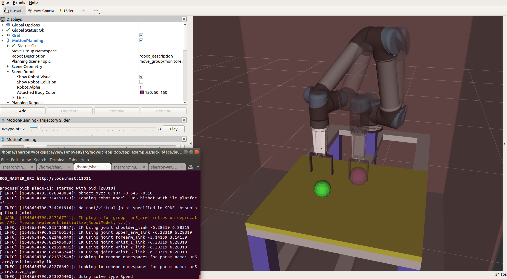

[App Tutorial Template]¶
Overview¶
(Describe what this application is in one topic sentence, followed by a paragraph telling what this application does in details. E.g.)
A template for the application tutorial. The application tutorial contains:
- An overview of the application
- Requirements on hardware and software
- Instructions for downloading/building/launching the application
- Expected outputs
- Customization notes
Requirements¶
(Describe the hardware and software requred to setup the environment for this application. Provide hyperlinkage to the procurement info or installation guides. E.g.)
- Hardware
- Host running ROS/ROS2
- Robot Arm (optional)
- Software
- ROS Melodic Desktop-Full
- MoveIt
Download and Build the Application¶
(Describe how to download and build the application. List build options specific to this application. E.g.)
Within your catkin workspace, download and compile the example code
cd <catkin_workspace>/src
git clone https://github.com/ros-planning/moveit_example_app.git
cd ..
catkin config --extend /opt/ros/${ROS_DISTRO} --cmake-args -DCMAKE_BUILD_TYPE=Release -DBUILD_RANDOM_PICK=ON
catkin build
- Build Options
- BUILD_RANDOM_PICK (ON | OFF ) Switch on/off building of the application random_pick
Launch the Application¶
(Describe how to launch the application. Provide hyperlinkage to launch robot contollers. List launch options specific to this application. E.g.)
- Launch robot controllers
- Launch this application
rosrun template template
- Launch Options
- grasp_xyz (double | “0.545 0.107 0.15”) Specify pick position in the “base” frame
- place_xyz (double | “-0.107 -0.545 -0.10”) Specify place position in the “base” frame
Expected Outputs¶
(Describe expected outputs from this application. Illustrate with screen snapshot when necessary. E.g.)
You should see Rviz output like this:
Customization Notes¶
(List possible customization items. Guide how to customize the application on new environment and new robots. E.g.)
- Change the pick position Use launch option “grasp_xyz” to change the pick position.
- Change the place position Use launch option “place_xyz” to change to place position.